Well，今天来LA的艺术馆逛了逛。去了这么多博物馆，第一次见到在博物馆里还要坐tram的hhh。藏品很丰富，大大扩充了我Rococo的见识，唯一的遗憾是，没有带相机进去，没想到里面的建筑那么漂亮，远眺的风景也很不错。

Van Goph
鸢尾花
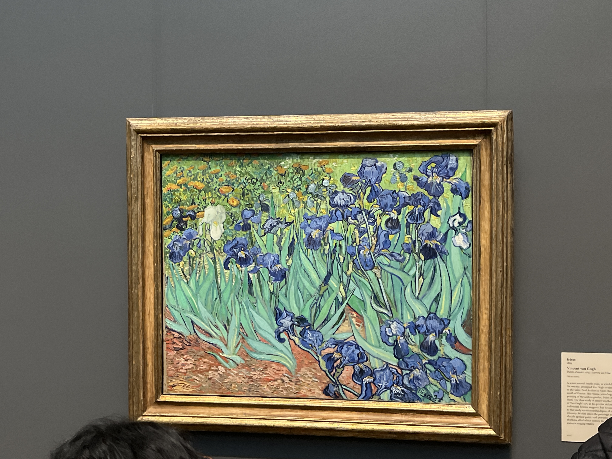
Baroque
Millet
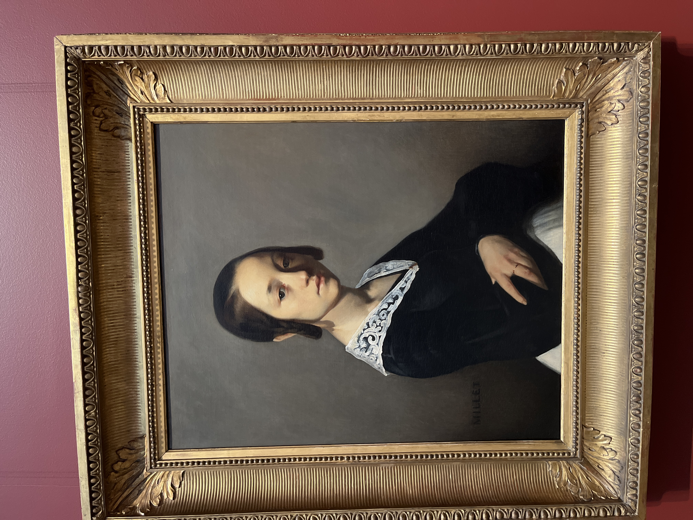
Originally intended for private display in the Feuardent family home, this restrained, sober portrait depicts the wife of Millet’s lifelong friend Félix-Bienaimé Feuardent, a clerk in the library of Cherbourg, in the artist’s native Normandy.
Posing for Millet shortly after her marriage, Louise-Antoinette would subsequently bear fourteen children, one of whom would marry the artist’s eldest daughter Marie. By that point, Millet had achieved international recognition as a painter of peasant life, his humble beginnings as a provincial portraitist long behind him.
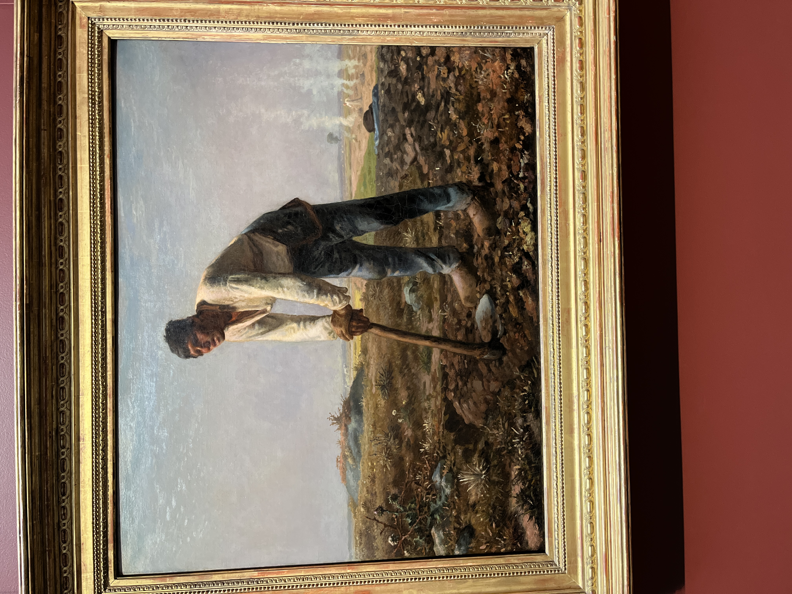
Millet wrote of his painting, “In a rocky place a man, all worn out … tries to straighten himself for a moment and breathe. The drama is surrounded by beauty.” The exhausted peasant faces a rough terrain of rocks and thorns; his hope for a productive future is suggested by the cultivated fields in the distance. Millet’s brutal image is beautifully painted, with the peasant and landscape united by rich earth tones and crisp brushstrokes.
Courber
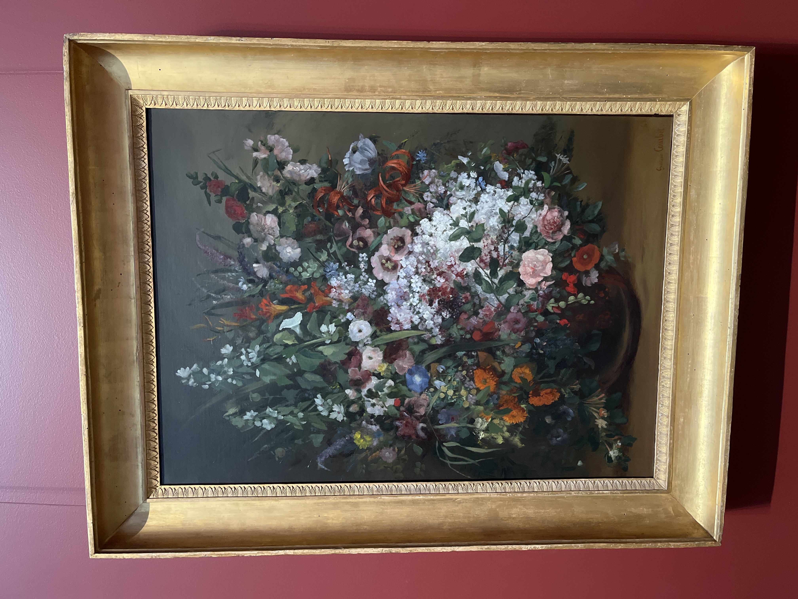
In the summer of 1862, Courbet began painting flower pictures during a happy sojourn in the Saintonge region of southwestern France. In a generous, bursting display that suggests a spontaneous gathering rather than careful arrangement of flowers, this bouquet intermingles many of the common garden varieties and exotic hothouse blooms that were available to Courbet at the estate of his host, the collector Etienne Baudry.
The artist sold the painting fresh off the easel to Baudry’s friend Frédéric Mestreau, a local banker and cognac wholesaler. Appreciating the commercial value of still-life painting, Courbet frankly admitted:
“Flowers are making me a mint.”
Nicolas de Largilliere
尼古拉德拉吉利耶1656–1746）是法国巴洛克时期最重要的肖像画家之一，活跃于路易十四到路易十五年代。

Although the subject of this portrait may be a young member of the French royal family, the painting’s composition, fluent brushwork, and warm tonalities derive from the artist’s training in a Flemish late-Baroque style indebted to Anthony van Dyck (1599-
1641). Largillière’s important contributions to the beginnings of the Rococo style can be discerned in the decorative qualities of the pastel coloring, the curvilinear forms, and the atmospheric landscape setting.
Romanism and neoclassicism
Tunner

Ten years after his final journey to Rome, Turner envisioned the Eternal City through a shimmering veil of memory and imagination. Baroque churches and ancient monuments in and around the Roman Forum seem to dissolve in iridescent light shed by a moon rising at left and a sun setting behind the Capitoline Hill at right. Amid these splendors, the city’s inhabitants carry on with their daily activities.
Untouched since it left Turner’s hands, the painting is in a remarkable state of preservation. It is shown here in the frame originally chosen by the artist.

Turner was a student of military history and a lover of seventeenth-century Dutch marine painting.
This turbulent seascape depicts a turning point in the career of Dutch naval officer Cornelis Tromp (1629-1691), who had been dismissed from service under suspicion of insubordination and conspiracy before being reinstated by the Admiralty. Raising his hat in salute, he is shown “going about,” a symbolic sailing maneuver indicating that he has made peace with his superiors and is ready to pursue a new tack. Despite the churning seas, whose force is conveyed by Turner’s bold, liberated technique, Tromp executes this maneuver with great panache.
Jacques Louis David
法国画家，是新古典主义（Neoclassicism）的代表人物之一，被普遍认为是法国大革命与拿破仑时代最具影响力的艺术家，既是顶尖画家，也是高度介入政治的公共人物。
新古典主义核心语言：强调清晰的轮廓与结构、理性克制的构图、古罗马/古希腊题材与“公民美德”（牺牲、忠诚、责任）的道德叙事
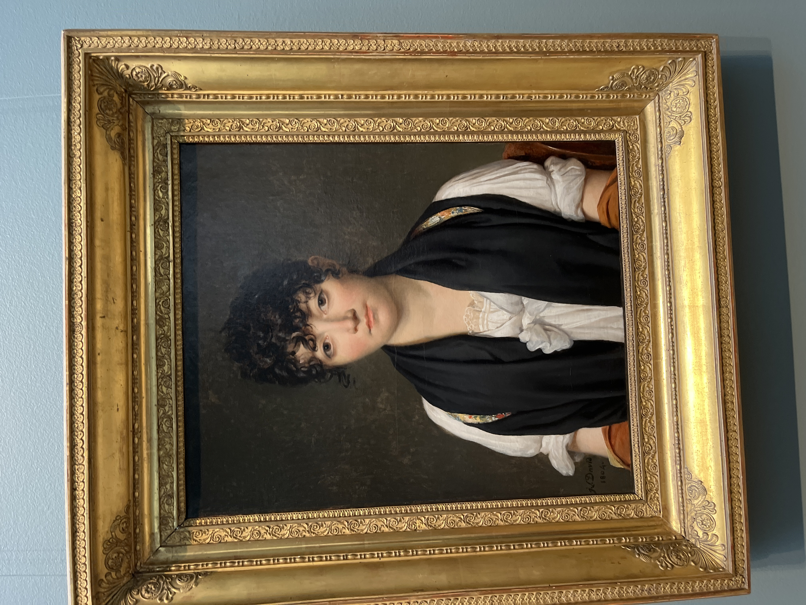
This portrait is one of the few private commissions David accepted once he began working regularly for Napoléon. Suzanne Le Peletier (1782-1829), the daughter of a martyr of the French Revolution, sat for this painting at the time of her engagement to her second husband. The painting’s straightforward pose, limited colors, and small size focus attention on Le Peletier’s intimate, tender gaze.
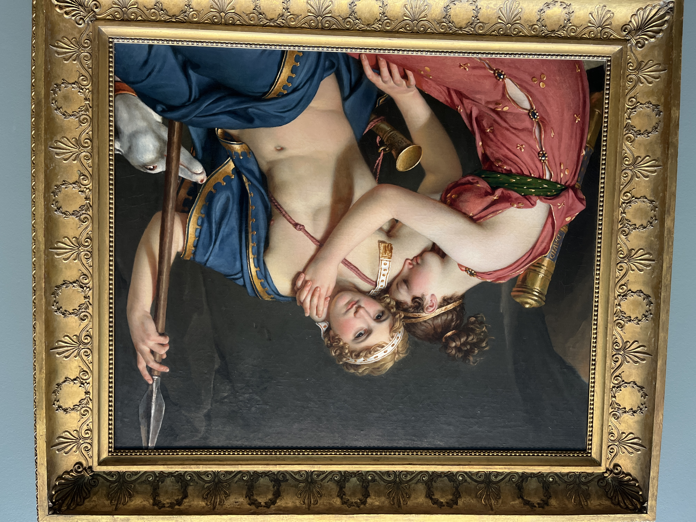
This image of ideal love was inspired by a 1699 French novel based on characters from Homer’s Odyssey. Telemachus, the son of Odysseus, falls in love with the nymph Eucharis. Filial duty, how-ever, requires that he end their romance in order to search for his missing father. The bright reds and blues contrasting with the cool flesh tones, the clarity of line, and the polished forms are characteristic of David’s late paintings.
Sophie Fremiet
David 学生 Sophie Fremiet
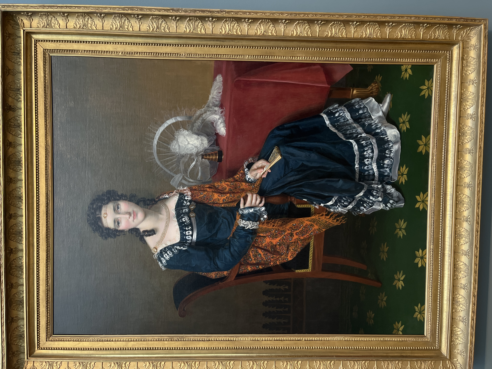
This ambitious portrait of an unidentified woman marked Fremiet’s public debut at the Brussels Salon in 1818. A favored pupil of Jacques-Louis David-then the most celebrated painter in Europe— Fremiet quickly established herself as a professional portraitist. Her noted skill in rendering different fabrics and materials is evident here in the elegant sitter’s lace-trimmed silk dress, brilliant cashmere shawl, and diaphanous bonnet. The opera spyglass on the table hints at a stimulating evening out at the theater.
Rococo
Watteau
华托以描绘贵族/戏剧人物在想象花园里“闲游、调情、聆乐”的场景闻名。大都会博物馆总结他的画常营造一种含蓄而惆怅（wistful）的气氛，重在“情绪与氛围”，而不是传统历史画那种清晰叙事。
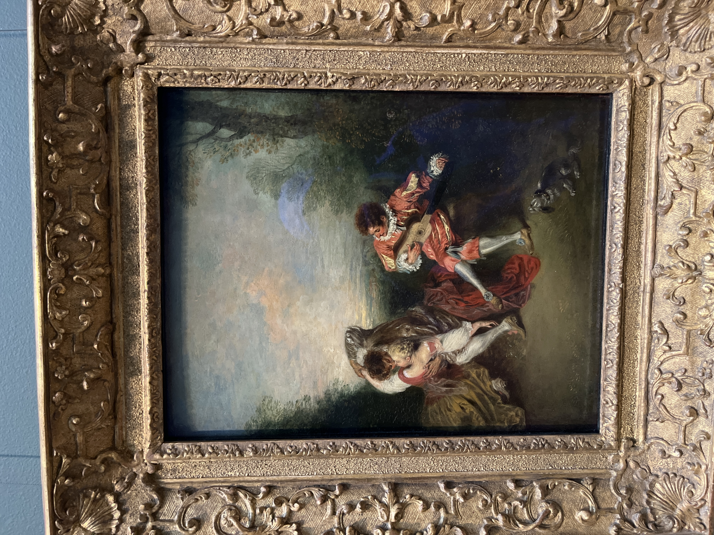
In a verdant park at sunset, a young woman abandons herself to her tousle-haired companion’s ardent embrace. The lovers are oblivious to the third figure, Mezzetin, a character from commedia dell’arte, the Italian comic theater, known for his musical gifts and amorous scheming. Tuning his guitar, Mezzetin observes the couple’s unbridled passion with a melancholy air. Watteau created and defined the genre of the fête galante, evocative outdoor scenes of amorous encounters and entertainment, including music-making. This painting, celebrated by the painter’s contemporaries and rediscovered only recently, is one of the genre’s finest examples.
Jeah Honore Fragonard
让-奥诺雷·弗拉戈纳尔（Jean-Honoré Fragonard，1732–1806）是18世纪法国最重要的洛可可（Rococo）画家之一，同时也是出色的素描家与版画家。他以充满享乐气息、暧昧调情与私密情绪的题材，以及轻快流动的笔触闻名，活跃于法国旧制度（Ancien Régime）晚期。
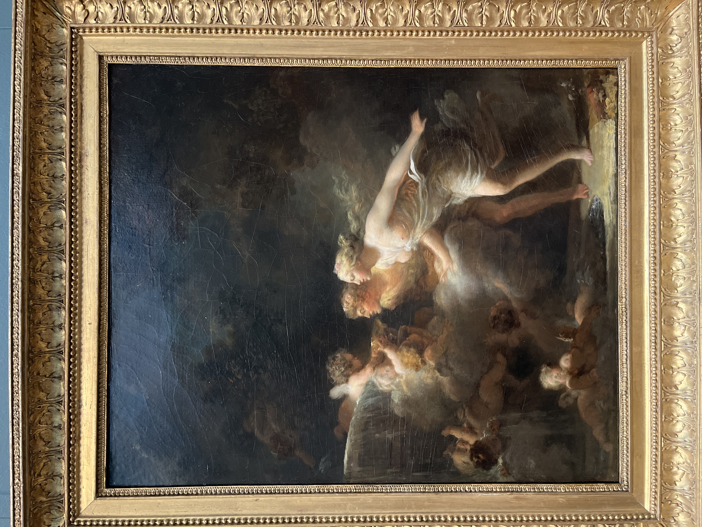
The fountain, as a focal point of an allegory of the progress of love, has its origins in the poetry of classical antiquity. A couple rushes to sip its magical waters and fall in love. Best known for his delightfully Rococo images, Fragonard responded to the more austere Neoclassical movement with this dreamy, moonlit image of antiquity. His luminous effects, limited palette, and fluid brushwork bring an evanescence to figures based on classical sculpture.
Boucher
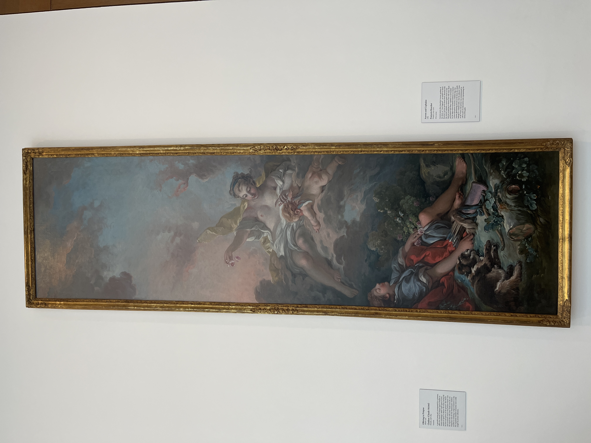
Ancient poets often described Aurora, goddess of the dawn, as “rosy fingered” —an epithet to which Boucher’s picture gives literal form. Besotted with the mortal Cephalus, Aurora gazes down on her beloved, preparing to shower him with roses. Slack and flushed with sleep, Cephalus is surrounded by the signs of his terrestrial existence as a hunter (a bow and quiver of arrows, a faithful dog), but Aurora, glimmering and airy as the dawn sky, clearly belongs to a celestial realm. Like the adjacent Venus on the Waters, this picture was commissioned in 1768 as part of a decorative suite representing the loves of the gods.
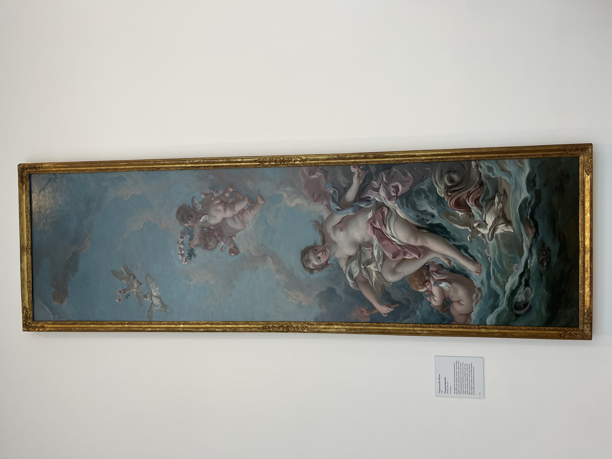
The eighteenth century’s preeminent painter of the female nude, Boucher counted Venus, Roman goddess of love, among his favorite subjects. Here two hovering putti prepare to crown her with a wreath of roses. Enthroned on the waves, Venus holds a rose and a torch, emblems of love and passion. Boucher rendered water, clouds, and flesh with equal fluency in this work, painted, like its adjacent pendant, for the Hôtel Bergeret de Frouville, a grand Parisian town house.
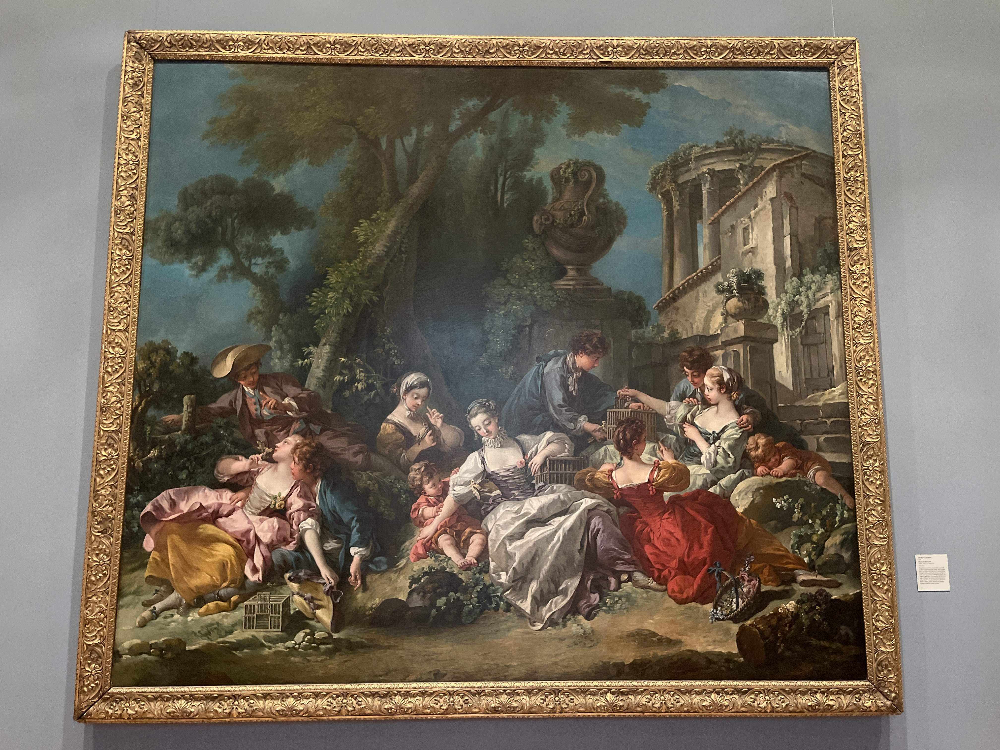
Young lovers and other companions snare birds in cages or tether them with strings. Birds, caught and then released, had symbolic currency among the eighteenth-century cultural elite as allegories of lost virginity, while in contemporary poetry the
“happily caged bird” was a metaphor for the lover’s heart, willingly imprisoned. Boucher excelled at such pastoral scenes, at once highly refined and playfully erotic, which satisfied his clientele’s nostalgic desire for country pursuits.
decoritive
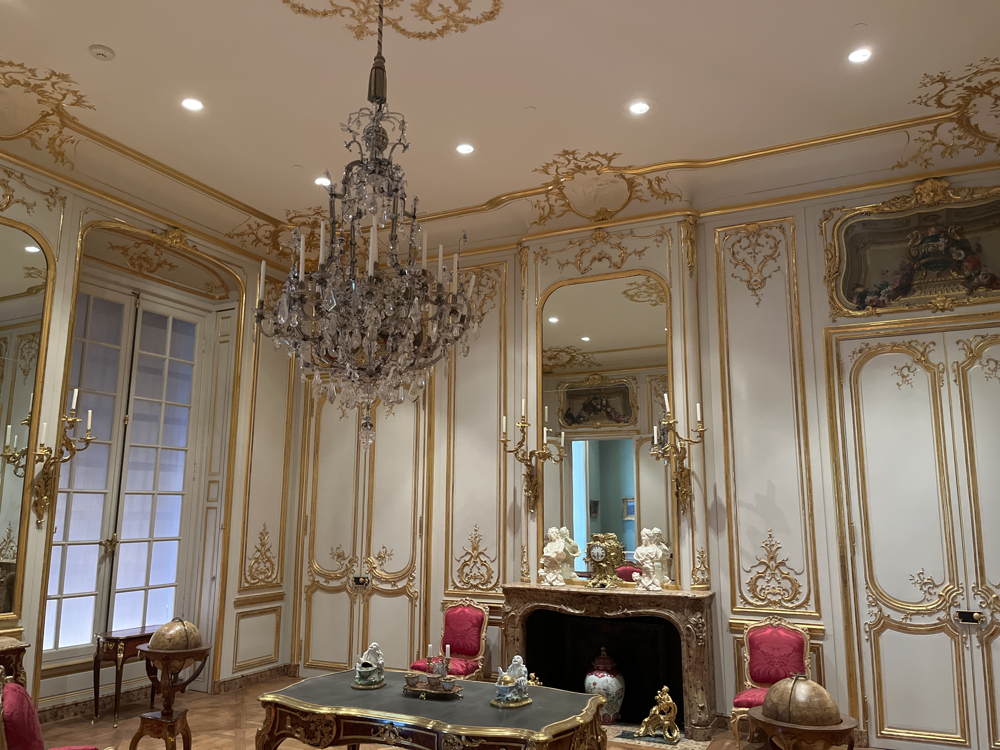
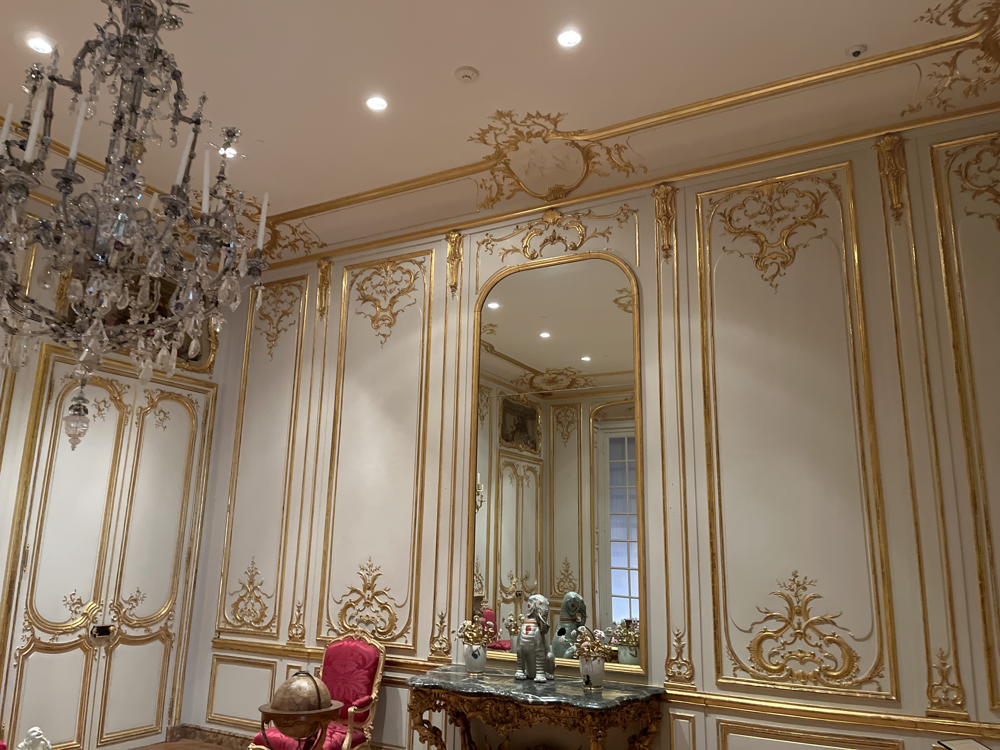
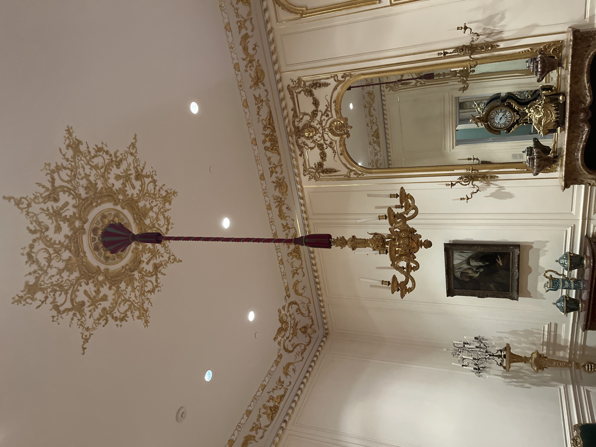
法国风景画 Claude Joseph Vernet
18世纪法国最重要的风景/海景画家之一，尤其擅长暴风雨、月光、海港等气氛场景；也画带地理特征的“纪实式”港口风景。英国国家美术馆概括他是18世纪后期法国最著名的风景画家之一，并强调他对“风暴与月夜”的高水平掌控。
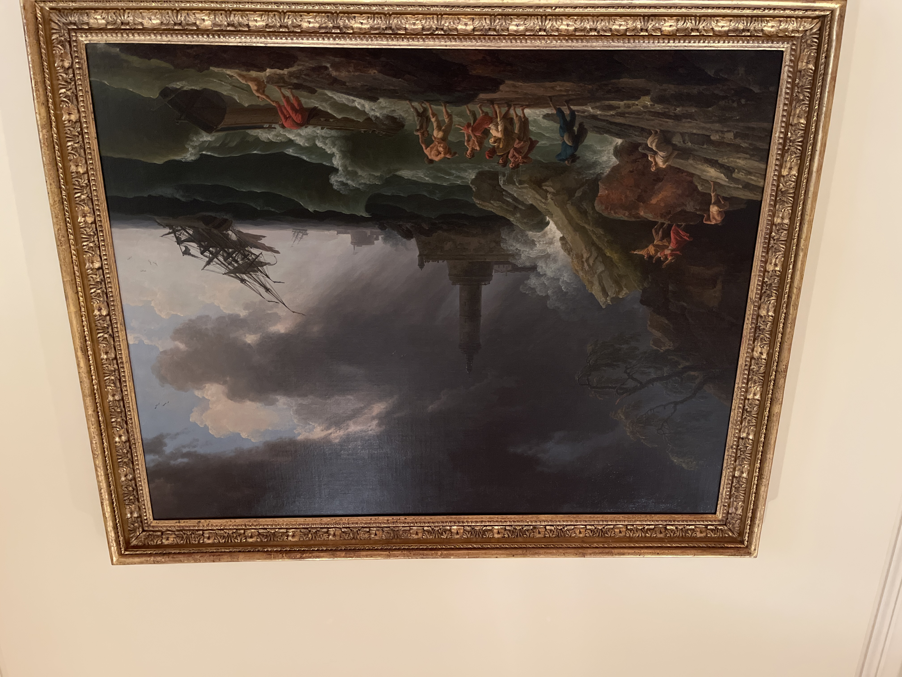
The most famous landscape and marine painter of eighteenth-century France, Vernet excelled in the atmospheric depiction of imaginary Mediterranean locations. In A Storm, an English merchant vessel battles raging seas while the exhausted, anguished survivors of a shipwreck are rescued. A diligent student of nature, Vernet rendered the elemental drama using a naturalistic palette dominated by greens, grays, and browns, applied in lively, sophisticated strokes. The companion to this picture, A Calm, hangs nearby.
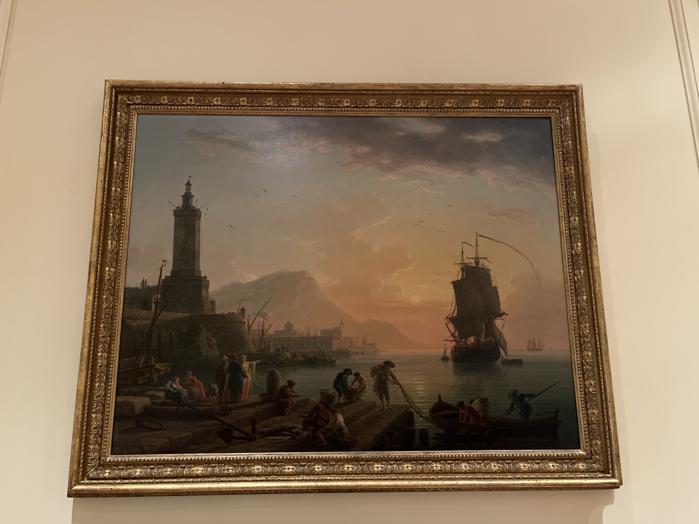
Vernet described this painting as “a seaport enriched with many figures, edifices, and maritime buildings at sunset.” While Turkish merchants converse on the quay and fishermen pursue their daily activities, a Dutch warship is peacefully moored in the bay. Vernet’s balanced composition, warm palette, and controlled brushwork suggest a harmony between man and nature. Together, A Calm and A Storm-its companion hanging nearby-powerfully evoke stark contrasts of weather and their effects on mankind.